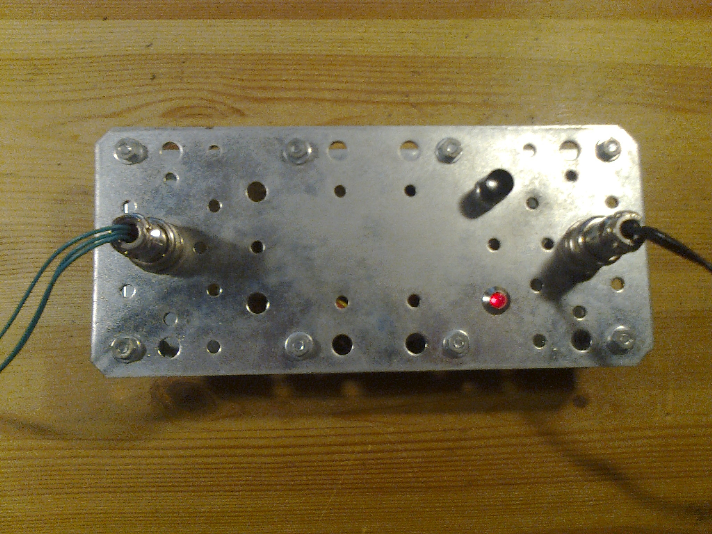

Text Games System
Que faire avec un microcontrôleur PIC16F876 retrouvé au fond d'un tiroir ?
Une minuscule console pour jouer à des jeux en mode texte, évidemment !
Cette console, baptisée Text Games System, a pour but de faire tourner une version allégée du célèbre jeu Hunt the Wumpus, ainsi que de petits jeux et programmes créés pour l'occasion.
La toute première personne dans l'univers à avoir codé un RPG pour microcontrôleur PIC, Denis CARLUS, a surnommé cette machine Strawberry PIC (d'où l'incroyable photomontage en haut de la page) en l'honneur du Raspberry Pi.
Caractéristiques techniques
Le microcontrôleur du Text Games System dispose exactement des mêmes performances que celui du A6, il comporte seulement moins de pattes. Les Intel Core i7 n'ont donc qu'à bien se tenir !
Plus sérieusement,
- CPU : cadencé à 4MHz, capable d'exécuter jusqu'à 1 MIPS.
- RAM : 368 octets répartis dans plusieurs banques (tant qu'à faire simple...).
- Stockage : EEPROM externe de 4096 octets. Le PIC y accède via le protocole I2C à une fréquence de 333KHz.
- Communication : port série RS-232 à 19200 bauds.
- Killer feature : Une superbe LED rouge très peu chère et très peu lumineuse commandée par le PIC.
Ces caractéristiques laissent rêveur, n'est-ce pas ?
Voici quelques détails supplémentaires :
- L'EEPROM de 4Ko sert à stocker les chaînes de caractères présentes dans les jeux. En effet, il est très lourd de stocker chaque caractère dans la mémoire de code du PIC (constituée de 8192 mots de 14 bits), car chaque octet fait perdre un mot entier et qu'il n'est pas si simple d'accéder à cette mémoire pour y lire autre chose que des instructions. La RAM est quant à elle trop petite pour pouvoir stocker toutes les chaînes.
- Le débit du port série est le maximum qu'il est possible d'atteindre en maintenant une marge d'erreur très faible lorsque le PIC est cadencé à 4MHz.
L'électronique plus en détail
Et voici le schéma électrique. Il contient le strict minimum pour faire fonctionner le système.
{kind=link}
L'alimentation est fournie par un bloc externe et régulée par un classique 7805. La diode D1 protège contre une inversion de polarité.
La conversion de niveaux RS-232 / TTL est assurée par un bon vieux MAX232 et ses fidèles condensateurs.
Le pin RA0, un des canaux du module ADC, est relié à une antenne réalisée sur le circuit avec de la soudure. Cette antenne expose le pin de l'ADC aux perturbations externes et lui donne une valeur aléatoire. Cette valeur est utilisée pour initialiser le générateur pseudo-aléatoire du système.
Le schéma et le fichier source gEDA se trouvent sur le dépôt git du projet.
Quelques photos
Le boîtier du Text Games System est composé des deux plaques en acier galvanisé traditionnelles, superposées à l'aide de boulons de 4x40 mm, permettant ainsi d'enfoncer un clou avec le Text Games System ou de s'en servir comme cric pour changer un pneu.
Voici quelques photos, où, comme toujours, le design est la préoccupation principale...
On remarque sur la première photo : l'interrupteur ON/OFF, la LED, le connecteur série (à gauche, doté des pins RX, TX et GND) et le connecteur d'alimentation (à droite).

La seconde photo dévoile les entrailles de la bête, où se cache un circuit assemblé sur une plaque d'essai.
{kind=link}
Et pour terminer, une photo montrant le système en fonctionnement.
{kind=link}
Un peu de soft
Le code source complet du système et des programmes se trouve dans le dépôt git suivant : https:⁄⁄github.com⁄RICCIARDI-Adrien⁄Text_Games_System.
Le fichier "Manuel de Programmation" situé dans le répertoire "Documentation" explique comment configurer un PC Windows pour compiler le code et comment créer des programmes (malheureusement, le compilateur utilisé, SourceBoost, ne fonctionne pas sous Linux).
Il est possible de générer la documentation de la partie système à l'aide de Doxygen, le fichier Doxyfile se trouve dans le répertoire "Documentation⁄System".
Le dossier "Software⁄Sources⁄System" contient une bibliothèque de fonctions qui permettent d'accéder facilement aux fonctionnalités du Text Games System. Tous les programmes se basent sur ces fonctions pour accéder à la plateforme.
Voici une brève liste des applications disponibles :
- Bootloader : ce n'est pas une application à proprement parler, mais plutôt un code résident dans la mémoire du PIC qui permet de programmer ce dernier via le port série au lieu de devoir recourir à un programmateur.
- Calculator : quoi de mieux que des calculs entiers sur 128 bits pour pousser à bout le pauvre coeur PIC16, absolument pas conçu pour le calcul ? Il ne se débrouille pas si mal, vous en seriez étonné...
- Cassaforte : l'EEPROM externe fabriquée par Microchip a une durée de rétention des données garantie de 200 ans. Quoi de mieux pour y stocker durablement des données ? Ce programme découpe la mémoire en de multiples zones dans lesquelles de petites quantités de données peuvent être sauvegardées.
- Cellular Automaton : le fameux jeu de la vie de Conway, une fois de plus. Mais cette fois, 1920 cellules sont gérées avec 368 octets de RAM...
- ePIC Adventures : le seul, l'unique ! Le tout premier RPG écrit pour PIC par Denis CARLUS. Son site détaille le jeu mieux que je ne le ferais.
- Games : le programme initial du Text Games System, composé de plusieurs jeux (Hunt the Wumpus, calcul mental, loto, recherche d'un nombre) et de plusieurs démos visant à faire ramer votre émulateur de tty.
- Tests : différents tests visant à vérifier le bon fonctionnement du système, tels que la stabilité de l'horloge ou la fiabilité des mémoires.
- Timestamp Storage : un programme que je qualifierais presque d'utile comparé aux autres, car il est destiné à stocker dans l'EEPROM interne du PIC la date et l'heure envoyées par un ordinateur relié au port série. Il sert uniquement à déterminer à quel moment une coupure électrique a eu lieu, avec une granularité d'une minute. Un Raspberry Pi se charge d'écrire l'heure toutes les minutes, ce qui évite d'user sa carte SD et permet en même temps de tester la robustesse de l'EEPROM interne du PIC. Pour éviter que les données ne soient corrompues si la coupure survient lorsque les données sont en cours d'écriture, un roulement sur deux zones mémoires différentes est mis en place.
Pour terminer, un aperçu des démos incluses dans le programme Games.
Ce GIF a été capturé avec le programme ttystudio. Le rendu réel est plus fluide.
Page créée le 18/01/2015.